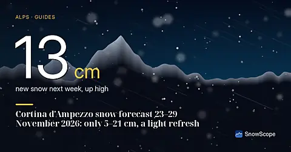
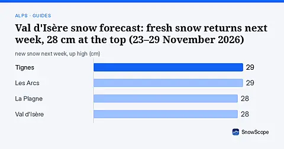
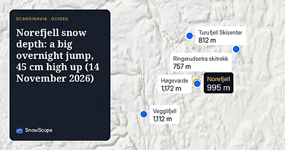
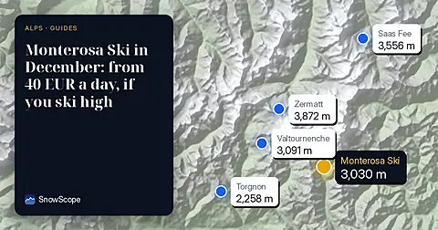
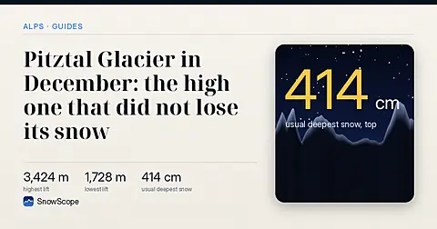
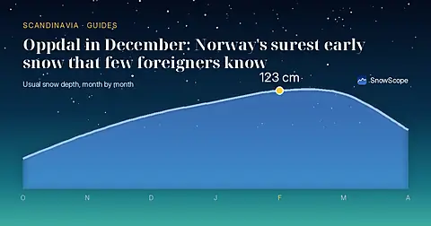
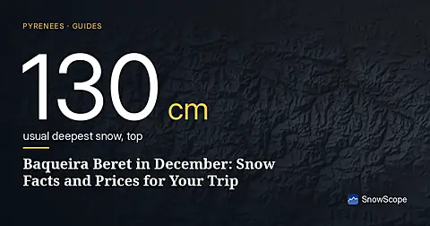

Snow reports · Guides
Daily snow reports for skiers: where the snow is, what is coming and where to ski, from the SnowScope snow map and measuring stations. Every number comes from that day's data.

Sestriere snow forecast for 23–29 November 2026: 30 cm at the top (15–44 cm), 25 cm at the base, snowiest day Wednesday 25 November, with neighbours compared.

Madonna di Campiglio snow forecast for 23–29 November 2026: 27 cm at the top (8–46 cm), 23 cm at the base, snowiest day Wednesday 25 November, with neighbours compared.

Val Gardena snow forecast for 23–29 November 2026: 11 cm at the top (5–18 cm), 6 cm at the base, snowiest day Wednesday 25 November, with neighbours compared.

Next week's fresh snow in Cortina d'Ampezzo: 5–21 cm on the upper slopes and 0–1 cm at the base (23–29 November 2026), best day, best slopes and how sure the forecast is.

Livigno snow forecast for 23–29 November 2026: 19 cm at the top (6–31 cm), 16 cm at the base, snowiest day Wednesday 25 November, with neighbours compared.

Next week's fresh snow in Courmayeur: 8–44 cm on the upper slopes and 5–28 cm at the base (23–29 November 2026), best day, best slopes and how sure the forecast is.

Cervinia snow forecast for 23–29 November 2026: 23 cm at the top (6–41 cm), 19 cm at the base, snowiest day Thursday 26 November, with neighbours compared.

Saalbach snow forecast for 23–29 November 2026: 17 cm at the top (3–31 cm), 8 cm at the base, snowiest day Sunday 29 November, with neighbours compared.

Stubai Glacier snow forecast for 23–29 November 2026: 14 cm at the top (2–25 cm), 12 cm at the base, snowiest day Thursday 26 November, with neighbours compared.

Hintertux snow forecast for 23–29 November 2026: 14 cm at the top (3–24 cm), 12 cm at the base, snowiest day Wednesday 25 November, with neighbours compared.

Mayrhofen snow forecast for 23–29 November 2026: 17 cm at the top (2–31 cm), 1 cm at the base, snowiest day Sunday 29 November, with neighbours compared.

Next week's fresh snow in Kitzbühel: 3–34 cm on the upper slopes and 2–14 cm at the base (23–29 November 2026), best day, best slopes and how sure the forecast is.

Next week's fresh snow in Obergurgl: 3–23 cm on the upper slopes and 2–20 cm at the base (23–29 November 2026), best day, best slopes and how sure the forecast is.

Sölden snow forecast for 23–29 November 2026: 13 cm at the top (2–24 cm), 8 cm at the base, snowiest day Thursday 26 November, with neighbours compared.

Next week's fresh snow in Lech-Zürs: 7–53 cm on the upper slopes and 6–48 cm at the base (23–29 November 2026), best day, best slopes and how sure the forecast is.

Ischgl snow forecast for 23–29 November 2026: 18 cm at the top (3–34 cm), 14 cm at the base, snowiest day Thursday 26 November, with neighbours compared.

St. Anton snow forecast for 23–29 November 2026: 25 cm at the top (5–45 cm), 18 cm at the base, snowiest day Sunday 29 November, with neighbours compared.

Next week's fresh snow in Andermatt: 3–38 cm on the upper slopes and 3–28 cm at the base (23–29 November 2026), best day, best slopes and how sure the forecast is.

Next week's fresh snow in Saas-Fee: 6–37 cm on the upper slopes and 5–30 cm at the base (23–29 November 2026), best day, best slopes and how sure the forecast is.

Engelberg snow forecast for 23–29 November 2026: 22 cm at the top (2–42 cm), 7 cm at the base, snowiest day Thursday 26 November, with neighbours compared.

Next week's fresh snow in Laax: 4–38 cm on the upper slopes and 1–10 cm at the base (23–29 November 2026), best day, best slopes and how sure the forecast is.

Next week's fresh snow in Davos: 4–27 cm on the upper slopes and 2–8 cm at the base (23–29 November 2026), best day, best slopes and how sure the forecast is.

St. Moritz snow forecast for 23–29 November 2026: 19 cm at the top (5–33 cm), 16 cm at the base, snowiest day Wednesday 25 November, with neighbours compared.

Verbier snow forecast for 23–29 November 2026: 24 cm at the top (5–42 cm), 9 cm at the base, snowiest day Thursday 26 November, with neighbours compared.

Next week's fresh snow in Zermatt: 7–39 cm on the upper slopes and 4–27 cm at the base (23–29 November 2026), best day, best slopes and how sure the forecast is.

Next week's fresh snow in Megève: 9–46 cm on the upper slopes and 1–2 cm at the base (23–29 November 2026), best day, best slopes and how sure the forecast is.

Next week's fresh snow in Flaine: 9–46 cm on the upper slopes and 8–45 cm at the base (23–29 November 2026), best day, best slopes and how sure the forecast is.

Avoriaz snow forecast for 23–29 November 2026: 29 cm at the top (9–48 cm), 17 cm at the base, snowiest day Wednesday 25 November, with neighbours compared.

Next week's fresh snow in Serre Chevalier: 25–68 cm on the upper slopes and 8–28 cm at the base (23–29 November 2026), best day, best slopes and how sure the forecast is.

Next week's fresh snow in La Grave: 23–74 cm on the upper slopes and 7–39 cm at the base (23–29 November 2026), best day, best slopes and how sure the forecast is.

Next week's fresh snow in Les 2 Alpes: 20–73 cm on the upper slopes and 4–22 cm at the base (23–29 November 2026), best day, best slopes and how sure the forecast is.

Alpe d'Huez snow forecast for 23–29 November 2026: 40 cm at the top (18–62 cm), 10 cm at the base, snowiest day Wednesday 25 November, with neighbours compared.

La Plagne snow forecast for 23–29 November 2026: 28 cm at the top (11–45 cm), 17 cm at the base, snowiest day Thursday 26 November, with neighbours compared.

Les Arcs snow forecast for 23–29 November 2026: 29 cm at the top (11–48 cm), 12 cm at the base, snowiest day Thursday 26 November, with neighbours compared.

Méribel snow forecast for 23–29 November 2026: 28 cm at the top (13–44 cm), 19 cm at the base, snowiest day Wednesday 25 November, with neighbours compared.

Next week's fresh snow in Courchevel: 12–42 cm on the upper slopes and 4–30 cm at the base (23–29 November 2026), best day, best slopes and how sure the forecast is.

Next week's fresh snow in Val Thorens: 13–46 cm on the upper slopes and 11–39 cm at the base (23–29 November 2026), best day, best slopes and how sure the forecast is.

Next week's fresh snow in Tignes: 11–48 cm on the upper slopes and 8–38 cm at the base (23–29 November 2026), best day, best slopes and how sure the forecast is.

Val d'Isère snow forecast for 23–29 November 2026: 28 cm at the top (10–46 cm), 24 cm at the base, snowiest day Thursday 26 November, with neighbours compared.

Chamonix snow forecast for 23–29 November 2026: 27 cm at the top (8–46 cm), 14 cm at the base, snowiest day Wednesday 25 November, with neighbours compared.

Beaver Mountain charges one $75 adult day price for 2026-27. Our snow history says early December is a coin flip there; the week before Christmas is far safer.

Bridger Bowl's 2026/27 adult ticket is $86 online, $99 at the window. Our history says mid-December is a coin flip at mid-mountain; late December is safer.

Himos snow in mid-November 2026: the weather stations around Jämsä measured 0 to 2 cm on 13 November; the first-snow cross-country loop opens on 14 November, the slope opening date is not set yet. Rain risk this week and 46 past winters.

Indy Base Pass $419, Indy+ $469, two days at each member area. We set it against checked December day prices at seven Indy areas, and their snow odds.

Lofsdalen snow report for mid-November 2026: the Häggberget station at 682 m measured 6 cm on 12 November, valley stations 7 to 8 cm on 13 November; about 7 cm more forecast with no rain, opening 11 December, 46 past winters.

Lookout Pass adult tickets for 2026-2027 are $63 midweek with a reservation, $75 on weekends. Mid-mountain had 20 in (50 cm) by 15 December in 85 % of past winters.

Montana Snowbowl's 2026/27 adult tickets are $78 on weekdays and $85 on weekends. Mid-mountain had 20 in (50 cm) by 15 December in 83 % of our past winters.

Narvikfjellet snow conditions in mid-November 2026: Norway's national snow map shows about 50 cm at 1110 m and 35 cm at 844 m but almost none by the fjord; the nearest Swedish station at Katterjåkk measured 9 cm. Week ahead and 46 past winters.

Røros dog sledding guide for winter 2026-27: about 5 to 6 cm of snow on Norway's national snow map, kennels listed by Destination Røros with prices, the Femundløpet sled-dog race in February 2027, and the rules for your own dog near tame reindeer.
Ski Cooper holds its adult weekday price at $49 for 2026-27 ($99 weekends). Mid-mountain usually has 26 in (66 cm) of snow on 15 December, 70 % of winters above 20 in.

Sunlight tickets start at $74 and its Sunny 6 Pack is $349 if bought by November 30, 2026. Mid-mountain had 20 in (50 cm) by 15 December in 72 % of winters.

Timberline full-day tickets are $129 off-peak and $161 peak; the afternoon ticket is $96 off-peak. Mid-mountain usually holds 52 in (132 cm) by 15 December.
From Ski Cooper ($49 weekdays, $99 weekends) to Mt. Baker ($98.80 vs $115.42): checked December price splits at seven US West ski areas, with their snow odds.

Romme Alpin snow in mid-November 2026: Borlänge measured 4 cm, Ludvika 10 cm and Falun 0 cm on 13 November; rain this week; the season starts 19 December on made snow. What 46 past winters say about natural snow here.

Schweitzer's 2026/2027 3-Pack is $249, $83 a day by the resort's own count. The top usually holds 54 in (138 cm) of snow by 15 December.

Krvavec December skiing: day pass EUR 47, 6 days EUR 205, yet only 13 cm at mid-mountain on a typical 15 December and 11 of 46 winters bare that day.

Ski 157 km of mapped runs in Serre Chevalier where the top of the mountain has a 100 % chance of snow by mid-December.

Beitostølen snow conditions in mid-November 2026: about 10 to 13 cm across the whole area on Norway's national snow map, 10 cm more forecast this week with no rain, and how 46 past winters usually look at this high village.

Vuokatti snow conditions in mid-November 2026: the stations at Sotkamo measured 0 cm on 13 November, Kajaani 1 cm; about 9 cm is forecast this week but some of it as rain; slopes aim to open 4 December. 46 past winters.

Turracher Höhe in December: 23 cm mid-mountain on a typical 15 December, 39 % of winters with 30 cm before Christmas; 6-day low-season pass EUR 353.

Branäs snow conditions in mid-November 2026: the Kindsjön station at 425 m measured 27 cm on 13 November, Letafors 17 cm, Östmark in the valley 0 cm. Rain risk this week, opening 11 December, 46 past winters.

Hochkar December skiing: day tickets seen from EUR 32.90 to 47.90 on December dates; 38 cm mid-mountain on a typical 15 December, falling since the 1980s.

Idre Fjäll December skiing: 32 cm mid-mountain on a typical 15 December; 65 % of winters with 30 cm in mid-December, 76 % in Christmas week. Honest odds.

Norefjell snow depth in mid-November 2026: Norway's national snow map jumped from about 4-5 cm to 15-20 cm overnight, with about 45 cm on the high plateau. The week ahead, rain risk low down, and 46 past winters.

Tahko snow depth in mid-November 2026: the slope season opened on 13 November with 2 of 14 lifts, on made snow; the stations around measured 0 cm after a short 2 to 4 cm cover melted. The week ahead and 46 past winters.

Brighton from $72 vs Ski Cooper at $49 weekdays and Wolf Creek at $96: Utah and Colorado budget areas compared on 46 winters of December snow.

Ten European ski resorts ranked for December value, led by Les 2 Alpes with 75 cm of mid-mountain snow.

Brundage day tickets start as low as $65 on select days; mid-mountain had 20 in (50 cm) of snow on 15 December in 87 % of our past winters. Holiday dates to avoid.

Boí Taüll starts at 2039 m and beats Baqueira Beret on day-pass price, though early December snow still takes some patience.

Funäsdalsfjällen snow in mid-November 2026: the station at Ljusnedal measured 7 cm on 13 November, Tänndalen is open on a small area, Ramundberget opens 19 December. Week ahead and 46 past winters at both resorts.

Sälen December skiing: 28 cm on a typical 15 December and 48 % of winters with 30 cm in mid-December, down from the 1980s; Trysil next door does better.

Rovaniemi husky and dog guide for winter 2026-27: the weather stations measured 7 to 8 cm on 13 November, the city's first ski track opened, three husky farms listed by Visit Rovaniemi with dates and prices, daylight, and the rules for your own dog.

Snow King adult day tickets start at $100. On our snow history its mid-mountain had 20 in (50 cm) by 15 December in 87 % of winters: a cheap way to ski the Jackson valley.

Orcières Merlette offers a high base at 1826 m and a 6-day pass from 227 EUR, making it a reliable choice for a December ski trip.

Is Alpe d'Huez worth it for December 2026? We check the snow odds, the starting price of 58.00 EUR, and compare it with Les 2 Alpes.

Myrkdalen snow depth in mid-November 2026: Norway's national snow map shows about 14 cm on the slopes and 33 cm at 1333 m; our forecast gives about 44 cm at the top in seven days. 46 past winters for late November.

Slovenia's ski passes are the cheapest (Krvavec EUR 205 for 6 days), but natural December snow there is rare; Lachtal, the Hochkar and the Mölltal glacier do better.

Loveland sells $60 online tickets through December 13, 2026, then $159 at the window. Is early-December snow good enough? Our 46 past winters answer week by week.

Cauterets offers 25 km of runs for 46 EUR, but our snow history shows that the best chance for cover is the last week of December.

Kiruna dog sledding guide for winter 2026-27: the weather station in Kiruna measured 0 cm of snow on 13 November, operators listed by Kiruna Lapland with season and prices, short days, and the rules for your own dog on ski tracks, in reindeer land and in Abisko National Park.

Lachtal December skiing: day pass EUR 62, children up to 6 free, 46 cm mid-mountain on a typical 15 December, but a clear downward trend.

Saariselkä snow report for mid-November 2026: the weather station in Saariselkä measured 4 cm on 13 November, steady for a week; about 22 cm is forecast in seven days with no rain; slopes aim to open 21 November.

White Pass online tickets start at $69 off-peak and $89 on peak days, and mid-mountain had 20 in (50 cm) of snow on 15 December in 87 % of past winters.

Ski the 131 km of runs in the Forêt Blanche this December with a six-day pass for 298 EUR.

Riksgränsen and Björkliden snow report for mid-November 2026: the station at Katterjåkk measured 9 cm and Abisko 2 cm on 13 November, the week ahead, why the lifts open only in February, and 46 past winters.

Ruka December skiing: 6-day pass EUR 265, day EUR 58; 36 cm on a typical 15 December, but only 39 % of winters with 30 cm in the first week.

Monterosa Ski day passes run from 40.00 to 71.00 EUR online. In December the snow is up high: 124 cm usual at 3030 m, 6 cm at 1207 m.

Hafjell snow report for mid-November 2026: about 2 cm near the top and nothing at the bottom on Norway's national snow map, 9 cm forecast at the top this week with rain below, and how 46 past winters usually look in late November.

Wolf Creek adult tickets are $96 on regular days and $110 on peak days for 2026-2027; mid-mountain had 34 in (87 cm) of snow on a typical 15 December.

Fellhorn/Kanzelwand December skiing: 63 cm at the 1965 m top on a typical 15 December, 10 cm at the bottom; Advent 6-day pass EUR 344.50 until 20 December.

On 13 November 2026 the weather stations in Stockholm and Helsinki measured 0 cm of snow while Sälen had 45 cm and Umeå 20 cm. Height, the sea, the city and the track of the storms explain it, with numbers from 46 past winters.

Plan your December 2026 trip to Les Orres by matching weekly pass prices with our snow history of 46 past winters.

Hemavan December skiing: 82 cm mid-mountain on a typical 15 December, every winter with 30 cm there in mid-December; the deepest December of our Nordic set.

Pyhä-Luosto snow depth in mid-November 2026: weather stations around the fells measured 0 to 9 cm on 13 November, below normal; about 23 cm is forecast this week with no rain. Opening plans and 46 past winters.

Brighton day tickets start at $72 for 2026/27 if bought early. Mid-mountain usually has 37 in (94 cm) of snow on 15 December, against 25 in (64 cm) at Park City.

Compare Grandvalira and Spanish resorts in December 2026 for snow depths, lift heights, and prices starting from 49.00 EUR.

Vemdalen snow conditions in mid-November 2026: Swedish weather stations around Vemdalsskalet and Björnrike measured 6 to 12 cm on 13 November after a snowy two days, about 8 cm more this week, opening plans and 46 past winters.

Pitztal Glacier December skiing: 87 cm mid-mountain on a typical 15 December, December snow up since the 1980s; day pass EUR 77, 6 days EUR 410.

Voss snow forecast for mid-November 2026: Norway's national snow map shows about 20 cm at 1348 m and almost nothing in town, our forecast gives about 35 cm on top of Voss Resort over seven days with rain below about 600 m, plus 46 past winters.

16 budget-friendly US ski areas ranked by December snow odds from 46 past winters, with the day prices we checked: from $49 weekdays to $125 and up.

For a low-cost December family ski week at Astún-Candanchú, aim for late December when top slopes hold good snow in 67 % of past winters.

Germany in December: the Zugspitze and the Fellhorn top had 30 cm in at least 9 of 10 winters in mid-December; Sudelfeld, Brauneck and the Feldberg rarely do.

A practical guide to dog sledding around Tromsø in winter 2026-27: which husky farms the tourist board lists, when the snow season starts, what a ride costs, the polar night, and the rules for walking your own dog on snow and near reindeer.

Puy-Saint-Vincent pairs a 44 EUR adult 1-day pass with solid December snow higher up, compared here with its big neighbour Serre Chevalier.

Kläppen snow depth in mid-November 2026: the weather station in Sälen, 13 km away, measured 45 cm on 13 November after 11 cm the day before; the resort reports 25 cm. Rain risk this week, opening 11 December, 46 past winters.

Every one of our 46 past winters had 20 in (50 cm) or more at Grand Targhee's mid-mountain on 15 December. Online day tickets run $125 to $180 by date.

Oppdal December skiing: 60 cm at the 585 m base on a typical 15 December, 93 % of winters with 30 cm there in mid-December, better than Trysil's base.

Grimentz-Zinal offers 71 km of runs and reliable high-altitude snow for your December trip, with 6-day passes at CHF 339.00.

Austria before Christmas: Galtür EUR 258 and Kühtai EUR 269 for 6 days with 30 cm in over 90 % of winters; glaciers cost more, small hills are a gamble.

Planning a December trip to Baqueira Beret? See our snow history, ticket prices starting at 70,00 € for a 1-day pass, and how it compares to Astún-Candanchú.

Bergen dog owners, weekend of 14 November 2026: bare ground at Florida on Friday, 5 cm only up at Kvamskogen, and a very wet Sunday. Bergen's year-round leash rules, the four fenced dog yards, and the Fløyen trails.

We rank French ski resorts by December snow odds and checked pass prices, starting from 36.00 EUR for an adult day pass in Les Karellis.

At Oukaïmeden, December gives 18 cm at mid-mountain in a typical month, against 44 cm in February and 53 cm in March. What 46 winters say about the right month to ski.


Galtür December skiing: 55 cm mid-mountain on a typical 15 December, 93 % of winters with 30 cm in mid-December; low-season day pass EUR 55.50 until 18 December.

Geilo December skiing: 57 cm mid-mountain on a typical 15 December, 96 % of winters with 30 cm in mid-December; day passes from NOK 590 (about EUR 56).

Göteborg dog owners, weekend of 14 November 2026: 0 cm of snow measured around the city on Friday, a mild, mostly dry weekend. Where the leash rules are relaxed in November, the 12 fenced dog yards and Delsjöområdet.